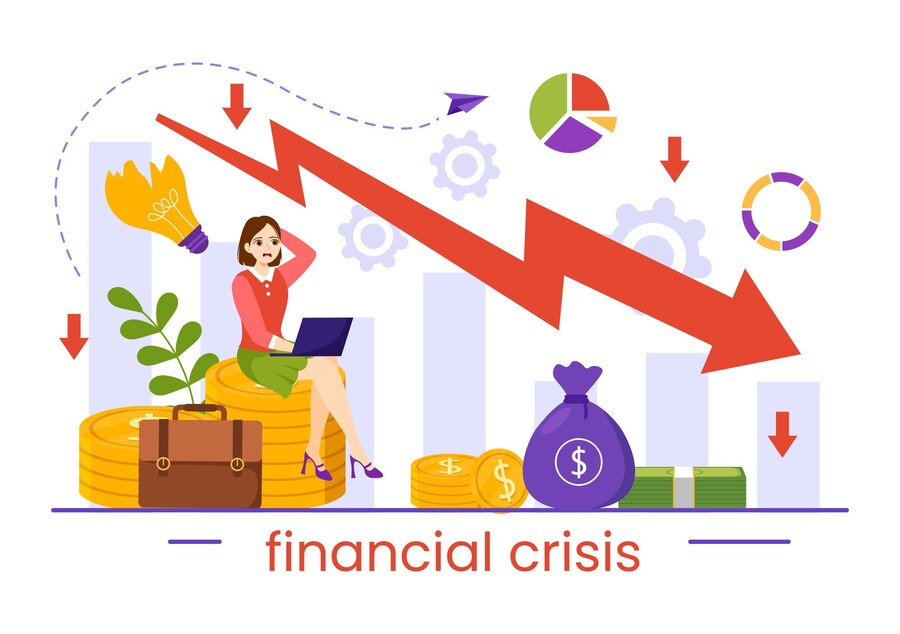
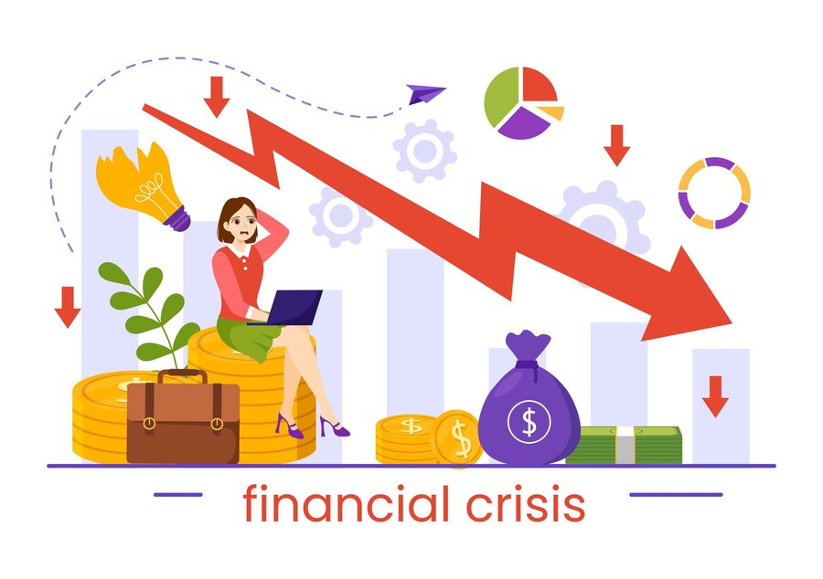

Educación Financiera
Aprende a Gestionar tus Finanzas con Tarjetas Bancarias
Entender cómo gestionar tus tarjetas de crédito y débito es clave para lograr el éxito financiero. Con la educación adecuada, puedes aprovechar al máximo estas herramientas financieras y evitar errores comunes. Nuestro objetivo es proporcionarte el conocimiento necesario para que tomes decisiones informadas sobre tu dinero.
Al aprender a usar correctamente estas tarjetas, podrás mejorar tu historial crediticio, controlar tus gastos y ahorrar para el futuro. Además, aprenderás a evitar los intereses altos y las deudas impagas que pueden afectar negativamente tus finanzas personales.
 
